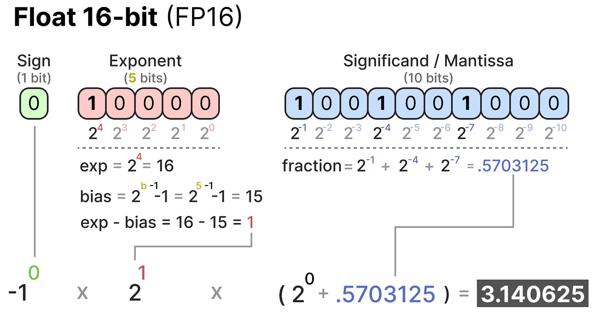
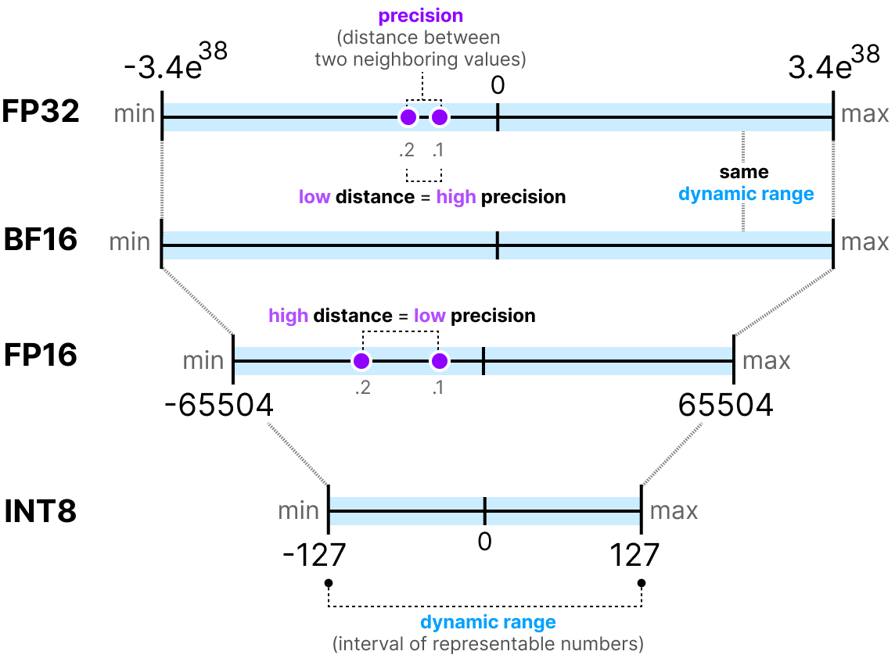
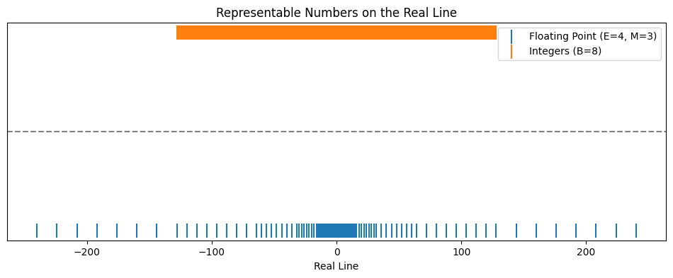
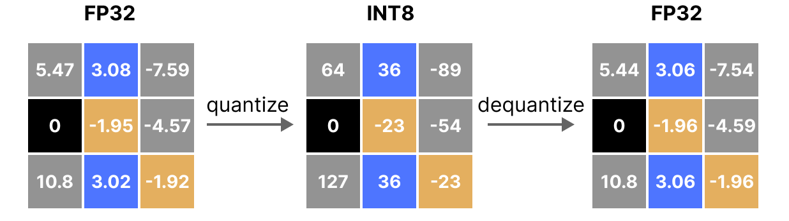
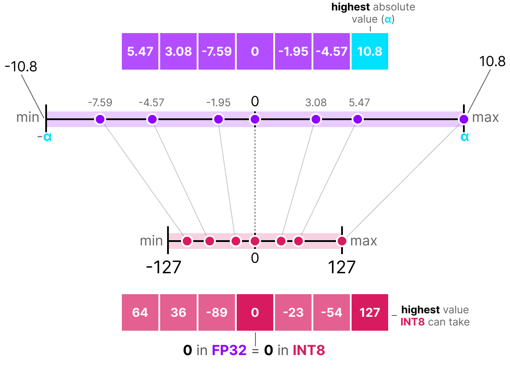
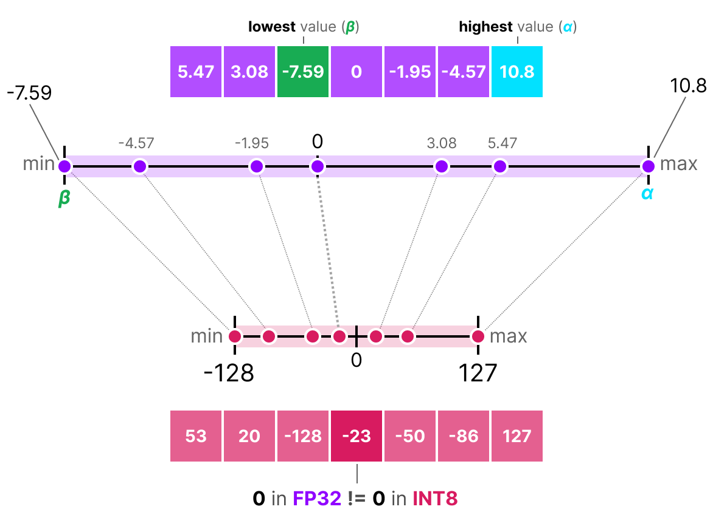
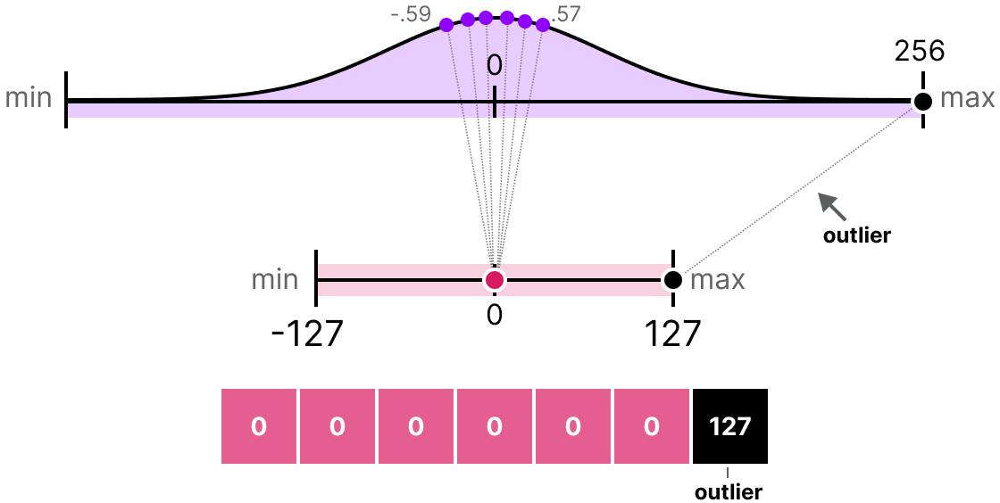
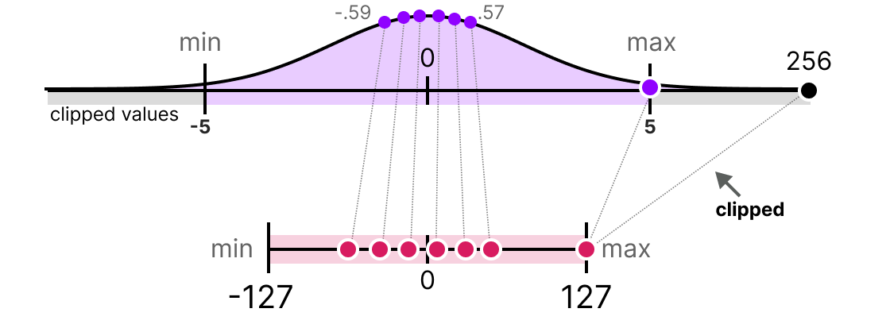
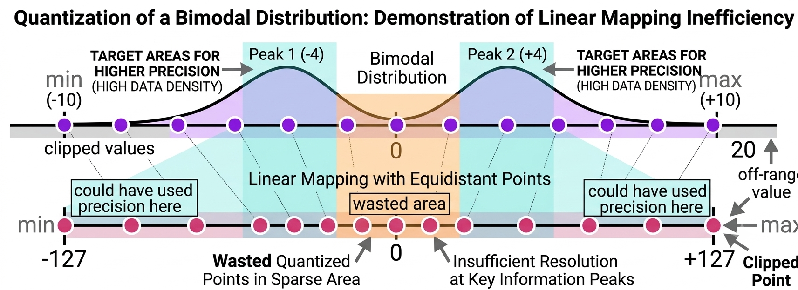
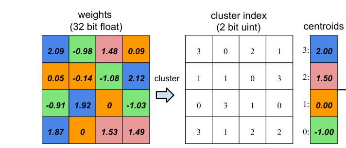

Quantization is the art of representing many real values using a small set of discrete codes. These notes build from reconstruction error to number formats, linear / affine maps, outliers, rotations, codebooks, and downstream inner products.
Quantization maps a continuous (or large) set of values to a smaller discrete set. There are two maps to keep track of:
If the only goal is to store and recover data, then a natural metric is reconstruction error. For values drawn from a distribution $P$, this is the mean squared error:
This distinction is important in ML: a quantizer that looks good by reconstruction error may not be the one that preserves model quality.
Computers already quantize numbers: a dtype determines which values are representable. Before designing our own low-bit maps, recall the two basic families of number formats.
Example: signed INT32. Integers are stored in
two’s complement (this encoding is for integer
formats, not floating point):
Formats such as FP16, FP32, FP64 use a sign / exponent / mantissa layout (“$1+e+m$ bits”):
What does the bit string represent?
Here $n(E)$ is the integer encoded by the exponent field, and $n(0.M)$ is the fractional value of the mantissa bits.

FP16 encoding cases (normals, subnormals, specials).

Common ML dtypes (FP32, BF16, FP16, INT8, …) trade precision (spacing between representable points) against range (max − min representable value).
FP32 and FP16 are the common “go-to” formats, but efficient ML often pushes further toward smaller bit widths:

FP8-style formats: still floating point, but very low bit width.
The objects we quantize are usually tensors or matrices: weights, activations, KV cache entries, and similar model states.

Either way, once we have a tensor or a calibration distribution, the core design question is how to place a small number of integer codes on the real line.
Throughout these notes we work with signed $b$-bit integer codes: there are $2^b$ representable values, with range \[ q \in \bigl\{-2^{b-1},\ldots,2^{b-1}-1\bigr\} \] (e.g. $b=8$ gives $-128,\ldots,127$). How we place those levels on the real line really depends on the data. It helps if a simple parametric map already approximates the data well.
The simplest answer is to use a uniformly spaced grid. Linear quantization stores an integer code and one or two small parameters describing how to convert that code back to a real number.
First assume the data is roughly centered around zero. We can map real values to signed integers using only one scale $\lambda$: $r = \lambda q$, with $q$ in the signed $b$-bit range above. Choose $\lambda$ so the largest magnitude maps to the largest positive code.
Using $q_{\max}=2^{b-1}-1$ (rather than $2^{b-1}$) keeps the positive and negative sides symmetric; the most negative code $-2^{b-1}$ is then unused by this particular scale choice.
Example: $\mathrm{project} =$ round to nearest integer, then clamp into $\{-2^{b-1},\ldots,2^{b-1}-1\}$.

Symmetric linear quantization: one scale, zero aligned at zero.
When the distribution is shifted / asymmetric: a zero-centered integer grid wastes codes on an empty region of the real line.
To move the grid left or right, introduce a zero-point $z_q$ as well as a scale:
Fit the two parameters by mapping the observed extremes onto the signed code endpoints $q_{\min}=-2^{b-1}$, $q_{\max}=2^{b-1}-1$: $r_{\max}\mapsto q_{\max}$, $r_{\min}\mapsto q_{\min}$.
On paper $z_q$ may come out non-integer. In practice one usually rounds $z_q$ to an integer (and may re-fit or slightly adjust $\lambda$) so that dequantization $r=\lambda(q-z_q)$ stays an integer shift in code space — what hardware expects.

Affine / asymmetric linear quantization (zero-point method).
Outliers. A few extreme values stretch the scale, so most of the mass gets too few effective bits.
Outliers consume dynamic range that the bulk of the data needs.
Clip extreme values before fitting the scale. This is reasonable when outliers are noise or otherwise not important for the downstream task. The tradeoff is clear: we improve resolution for the bulk of the data by deliberately distorting the clipped values.


Sometimes the outlier is important, so clipping is too destructive. A different idea is to change coordinates before quantizing. If one coordinate carries too much energy, a rotation can redistribute that energy so no single entry dominates the scale.
Use a simple 3D orthogonal transform that applies a 2D Hadamard rotation to the first two coordinates and leaves the third coordinate unchanged:
What matters for symmetric quantization is the abs-max $\|x\|_\infty=\max_i|x_i|$, since it sets the scale $\lambda$. Rotation “helps” only if $\|Rx\|_\infty < \|x\|_\infty$. Since $R$ is fixed, whether it helps depends entirely on the direction of the data. The next three inputs all have the same energy $\|x\|_2=100$.
The abs-max goes $100 \rightarrow 70.7$ (down by $\sqrt2$). The energy on one coordinate is spread across two coordinates — exactly what we want.
The abs-max goes $70.7 \rightarrow 100$ (up by $\sqrt2$). This vector has the same norm as Example 1, but its energy is already aligned with the first row of $R$. The rotation concentrates the energy instead of spreading it.
Now keep the single outlier pattern from Example 1, but move the outlier to the third coordinate, which this particular rotation leaves untouched:
The abs-max stays $100 \rightarrow 100$. Same magnitude, same norm, and still just one outlier — but the outlier is located in a coordinate that $R$ does not mix. Changing where the outlier lives can therefore change whether a fixed rotation helps.
Note that all three inputs have the same norm — orthogonal maps preserve it, $\|Rx\|_2=\|x\|_2$. The rotation only redistributes energy across coordinates; it never removes it.
If we knew $x$ in advance, we could choose or learn a better rotation for that particular vector. In ML, however, a transform should work for many inputs. Learning a full $d\times d$ orthogonal matrix for a single $x\in\mathbb{R}^d$ is usually not useful — it becomes worthwhile when one matrix applies to many vectors, e.g. a batch $X\in\mathbb{R}^{n\times d}$ with $n\gg d$, where some channels are consistently outliers.
Exact random orthogonal matrices are awkward to sample and analyze by hand. A convenient proxy is a randomized linear projection with i.i.d. Gaussian entries. It is not literally a rotation (rows are not exactly orthonormal), but in high dimension it behaves similarly for our purposes and the coordinates of $y=Mx$ are easy to compute with.
For $y=Mx$,
So each coordinate is (approximately) $\mathcal{N}(0,\|x\|_2^2/d)$, and $E[\|y\|_2^2]=\|x\|_2^2$. Norms are preserved in expectation (and concentrate in high $d$), even though $M$ is not exactly orthogonal. The useful intuition is that each output coordinate sees many small random contributions, so a single large input coordinate is spread across many outputs.
This “equalizing” effect of random projections is largely an artifact of high dimension.
Multimodal distributions. A uniform grid spends codes evenly across an interval, but the data may live in separated clusters with empty space between them.

Linear levels miss multimodal structure.
Codebook / clustering approximation: learn a set of centroids $\{c_i\}$ and store each value as the index of its nearest centroid. This gives flexible, data-adapted quantization — but dequantization becomes a table lookup, and arithmetic generally requires dequantizing first.
This is the main tradeoff: codebooks can fit awkward distributions much better than a linearly spaced grid, but they give up some of the hardware simplicity that makes linear quantization attractive.

Weight clustering: float weights mapped to low-bit cluster indices plus centroids.
| Aspect | Linear quantization | Codebook (non-linear) |
|---|---|---|
| Mapping | Affine: $q=\mathrm{round}(x/s)+z$ | Lookup: $q=\arg\min_i |x-c_i|$ |
| Reconstruction | $x\approx s(q-z)$ | $x\approx c_q$ |
| Best for | Roughly uniform / unimodal mass | Skewed or multimodal mass |
| Hardware | Excellent (integer ops) | Moderate / poor |
| Compute | Often stays in quantized space | Usually needs dequantization |
We began with reconstruction error, but in ML the quantized values are usually used inside later computations. The simplest downstream computation to analyze is an inner product.
Assume a grid of precision $\delta$ (spacing between representable values). Round-to-nearest guarantees
The quantized inner product expands as
If the signs align, every term $x_i\Delta_i$ can push in the same direction. For example, take $x_i \ge 0$ and $\Delta_i=\delta/2$ for all $i$. Then
Squaring gives a worst-case squared error of order
Round-to-nearest minimizes per-coordinate error, but the inner-product error can still accumulate coherently across coordinates.
Suppose $w_i$ lies between consecutive grid points $a < w_i < b$ with $b-a=\delta$. Stochastic rounding sets
Equivalently, $\hat{w}=w+\Delta$ with a random per-coordinate error $\Delta_i$.
The quantized inner product is unbiased.
Assuming independent rounding noise across coordinates,
With fractional part $\alpha_i=(w_i-a)/\delta \in [0,1]$,
Therefore
The bound can be smaller still, depending on the actual fractional parts $\{\alpha_i\}$ and on $x$.
Since $\|x\|_2 \le \|x\|_1 \le \sqrt{d}\,\|x\|_2$, the $\ell_1$ worst case can be up to a factor $d$ larger in squared error than the stochastic $\ell_2$ MSE, especially for dense $x$.
Apply Chernoff bounds to the stochastic-rounding estimator $\langle x,\, \hat{w}\rangle$ to show that the error $S=\sum_i x_i\,\Delta_i$ concentrates around zero. Derive a bound of the form
for an explicit rate function $f$.
Hint. Each coordinate under stochastic rounding is a shifted Bernoulli random variable, so $S=\sum_i x_i\,\Delta_i$ is a weighted sum of independent Bernoullis. Start from the moment generating function $\mathbb{E}[e^{\lambda S}] = \prod_i \mathbb{E}[e^{\lambda x_i\Delta_i}]$, optimize over $\lambda$, and obtain a Chernoff tail.
Related notes: rotation_outliers.html, prune_a_model_to_quantization.html.